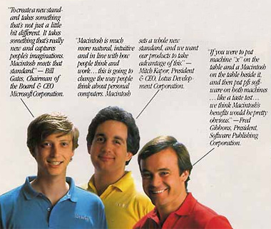

De Apple Macintosh (1984)
zondag 25 januari 2004 | Actualiteit
Toen ik een duim hoog was, stelde Apple hun revolutionaire Macintosh voor aan de wereld, de eerste personal computer met een gebruiksvriendelijke grafische interface én de eerste die gebruik maakte van een klein bakje met een draad waarmee je over het scherm kon navigeren.
In Newsweek publiceerde het bedrijf een zestien pagina’s tellende infomercial (download PDF), om de lezers vertrouwd te maken met deze nieuwe begrippen.
Een aantal zaken zijn me opgevallen bij het doorbladeren van de folder:
- De typische minimalistische huisstijl van Apple is quasi onveranderd gebleven over de jaren. Dat zie je bijvoorbeeld aan de bekende serif-font in tinten van zwart en grijs, het veelvuldige gebruik van wit en de spiegelbeelden van hardware apparatuur op een wit decor. Knap!
- De opgepepte marketing-talk zou je vandaag probleemloos kunnen recycleren. Bekijk eens de hardware pagina’s op de site van Apple: je ziet dezelfde redenen opgesomd waarvoor je vandaag — dringend — een G5 moeten aanschaffen. Je werk verloopt sneller, efficiënter en veel aangenamer dan voorheen.
- Die beige kleur! Mijn God, wie is daar in godsnaam mee begonnen! Tot op vandaag worden computers in diezelfde verschrikkelijke kleur verkocht. Het ziet er achteraf onwaarschijnlijk ouderwets uit. Zou een stalen G5 van vandaag binnen twintig jaar even uit-de-tijd aandoen? Ik denk van niet, maar ja… dat dachten ze toen wellicht ook ;-)
- Blader vooral eens naar pagina 10 waar Bill Gates himself getuigt over de revolutionaire Macintosh of naar pagina 5 waar een student met zijn ‘draagbare’ computer langs de kant van de weg een boek leest. Grappig!

Stijn op 29 januari 2004
Schaamteloze zelfpromotie: de reclamespot “1984” waarmee Apple hun eerste PC aan het publiek voorstelde, is te bekijken op http://www.speedzone.be/art…